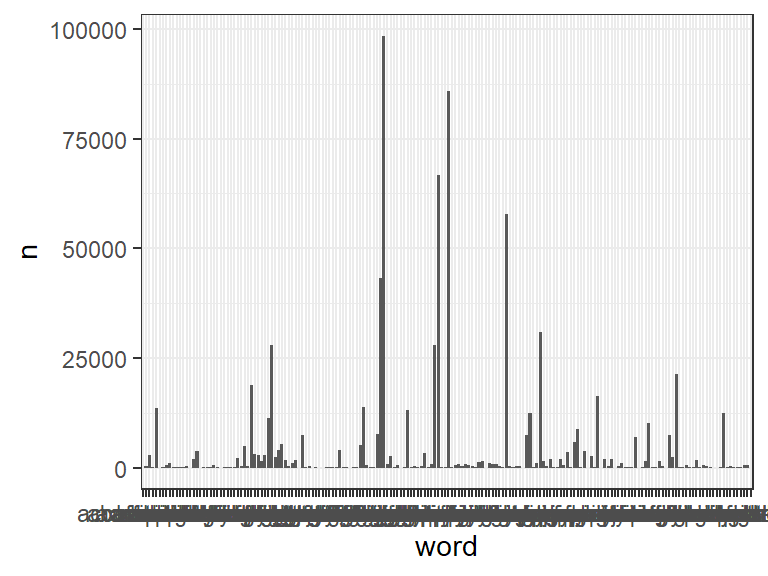
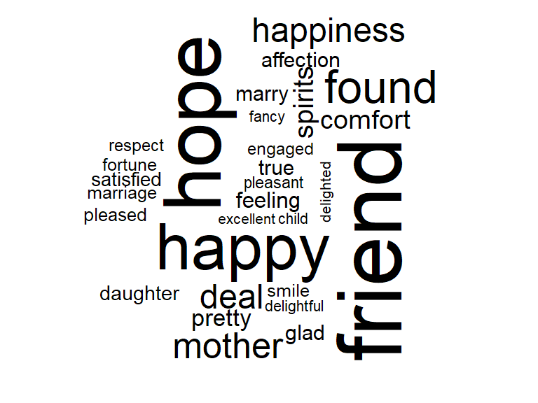
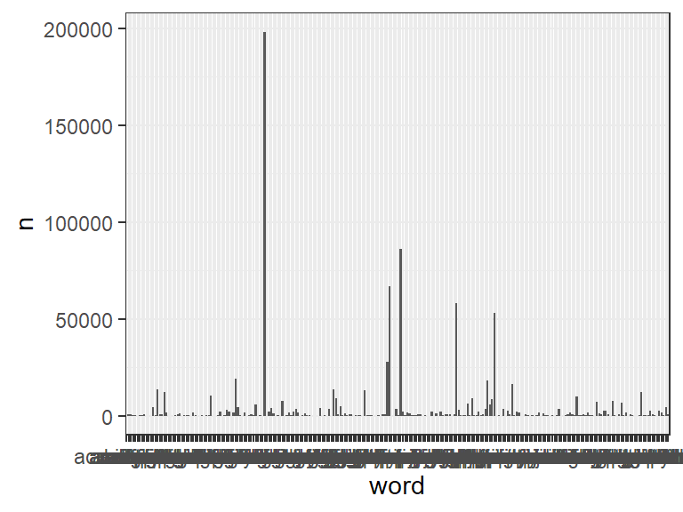
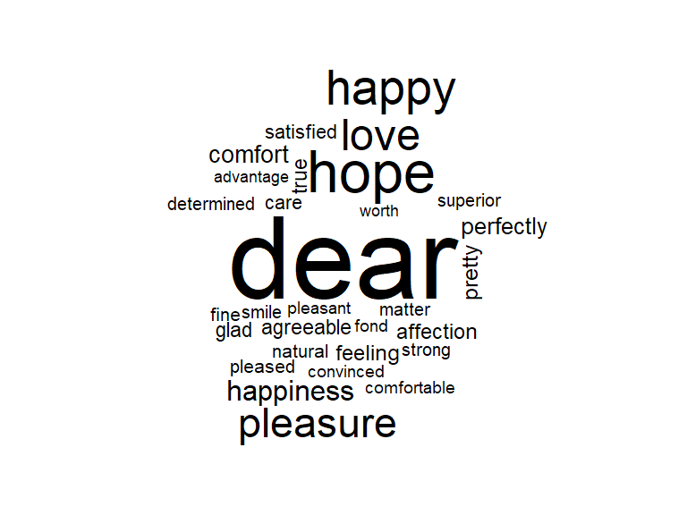
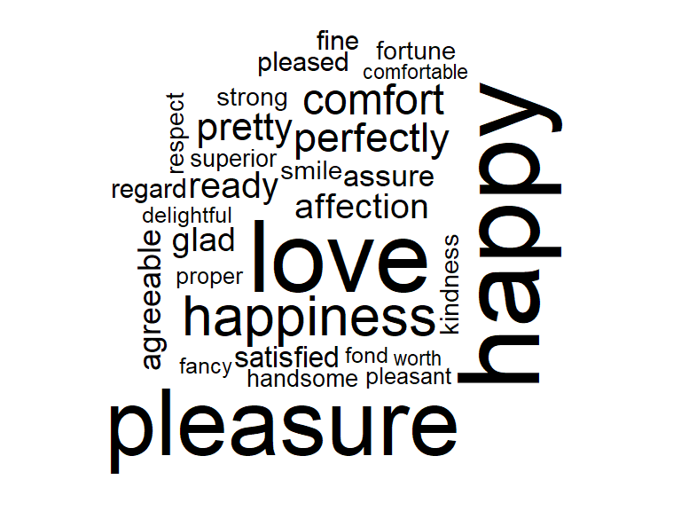

austen <- austen_books() %>%
group_by(book) %>%
mutate(
linenumber = row_number(),
chapter = cumsum(str_detect(
text,
regex("^chapter [\\divxlc]",
ignore_case = TRUE
)
)),
.before = text
) %>%
ungroup() %>%
select(book, chapter, linenumber, text)Homework Assignment: Sentiment Analysis of Emma
Title: Exploring Joyful Language in Jane Austen’s Emma using Tidytext
Objective:
Use the tidytext package and three different sentiment lexicons (nrc, afinn, bing) to explore positive/joyful words in Emma by Jane Austen. You will tokenize the text, apply sentiment filters, visualize frequent sentiment words using ggplot2, and create a word cloud.
1. Data Preparation
- Load the
austen_books()dataset from thejaneaustenrpackage. - Group by book and detect chapter boundaries using regex.
- Create
linenumberandchaptercolumns.
2. Tokenization
- Use
unnest_tokens()to tokenize text into individual words. - Explain briefly why we name the output column
word(include this as a comment in your script).
tidy_austen <- austen %>%
unnest_tokens(word, text) %>%
mutate(word = str_extract(word, "[a-z']+")) %>% #output column is named "word" because the tokenization is performed by unit of word, rather than other unit (e.g. sentence, paragraph, etc.)
anti_join(stop_words, by = "word") ## filter out stop words
tidy_austen %>% slice_sample(n = 5)# A tibble: 5 × 4
book chapter linenumber word
<fct> <int> <int> <chr>
1 Persuasion 21 6516 elliot
2 Sense & Sensibility 27 5517 elinor's
3 Mansfield Park 22 6827 crawford
4 Pride & Prejudice 21 4097 rich
5 Sense & Sensibility 41 9737 enquire 3. Sentiment Analysis
Filter joy/positive words from each of the three sentiment lexicons:
nrc(joy)# nrc sentiment lexicon (one of ten emotions) nrc_austen <- tidy_austen %>% filter(word %in% get_sentiments("nrc")$word[(str_detect(get_sentiments("nrc")$sentiment, "joy"))]) ## subsets get_sentiments to only joy terms, then uses this to filter the austen tokens nrc_austen# A tibble: 16,647 × 4 book chapter linenumber word <fct> <int> <int> <chr> 1 Sense & Sensibility 1 19 companion 2 Sense & Sensibility 1 28 goodness 3 Sense & Sensibility 1 29 comfort 4 Sense & Sensibility 1 29 cheerfulness 5 Sense & Sensibility 1 32 marriage 6 Sense & Sensibility 1 34 fortune 7 Sense & Sensibility 1 34 mother 8 Sense & Sensibility 1 36 marriage 9 Sense & Sensibility 1 37 wealth 10 Sense & Sensibility 1 38 fortune # ℹ 16,637 more rowsafinn(positive scores ≥ 1)# afinn sentiment lexicon (values from -5 to +5) afinn_austen <- tidy_austen %>% filter(word %in% (get_sentiments("afinn") %>% ## different approach here, used pipe instead of subset filter(value >= 1) %>% pull(word) ) ) afinn_austen# A tibble: 20,169 × 4 book chapter linenumber word <fct> <int> <int> <chr> 1 Sense & Sensibility 1 16 engage 2 Sense & Sensibility 1 18 advanced 3 Sense & Sensibility 1 22 legal 4 Sense & Sensibility 1 26 increased 5 Sense & Sensibility 1 27 wishes 6 Sense & Sensibility 1 28 goodness 7 Sense & Sensibility 1 28 solid 8 Sense & Sensibility 1 29 comfort 9 Sense & Sensibility 1 37 wealth 10 Sense & Sensibility 1 42 secured # ℹ 20,159 more rowsbing(positive)# bing sentiment lexicon (positive or negative) bing_austen <- tidy_austen %>% filter(word %in% (get_sentiments("bing") %>% filter(sentiment == "positive") %>% pull(word) ) ) bing_austen# A tibble: 22,770 × 4 book chapter linenumber word <fct> <int> <int> <chr> 1 Sense & Sensibility 1 16 respectable 2 Sense & Sensibility 1 18 advanced 3 Sense & Sensibility 1 25 comfortably 4 Sense & Sensibility 1 28 goodness 5 Sense & Sensibility 1 28 solid 6 Sense & Sensibility 1 29 comfort 7 Sense & Sensibility 1 30 relish 8 Sense & Sensibility 1 33 steady 9 Sense & Sensibility 1 33 respectable 10 Sense & Sensibility 1 34 amply # ℹ 22,760 more rows
Join each with Emma’s text and:
- Count word frequency.
- Filter for frequently occurring words (
n > 50). - Visualize using a bar chart (
ggplot2) and a word cloud (wordcloud).
nrc
emma_nrc <- nrc_austen %>%
filter(book == "Emma") %>%
inner_join(tidy_austen, by = "word") %>%
group_by(word) %>%
count() %>%
arrange(desc(n)) %>%
filter(n > 50)Warning in inner_join(., tidy_austen, by = "word"): Detected an unexpected many-to-many relationship between `x` and `y`.
ℹ Row 1 of `x` matches multiple rows in `y`.
ℹ Row 100 of `y` matches multiple rows in `x`.
ℹ If a many-to-many relationship is expected, set `relationship =
"many-to-many"` to silence this warning.emma_nrc# A tibble: 180 × 2
# Groups: word [180]
word n
<chr> <int>
1 friend 98438
2 hope 85943
3 happy 66750
4 love 57915
5 found 43148
6 mother 30837
7 happiness 28044
8 deal 27876
9 spirits 21376
10 comfort 18980
# ℹ 170 more rows# bar chart
nrc_austen %>%
filter(book == "Emma") %>%
inner_join(tidy_austen, by = "word") %>%
group_by(word) %>%
count() %>%
filter(n > 50) %>%
ggplot(aes(x = word, y = n)) +
geom_bar(stat = "identity")Warning in inner_join(., tidy_austen, by = "word"): Detected an unexpected many-to-many relationship between `x` and `y`.
ℹ Row 1 of `x` matches multiple rows in `y`.
ℹ Row 100 of `y` matches multiple rows in `x`.
ℹ If a many-to-many relationship is expected, set `relationship =
"many-to-many"` to silence this warning.
# word cloud
nrc_austen %>%
filter(book == "Emma") %>%
inner_join(tidy_austen, by = "word") %>%
group_by(word) %>%
count() %>%
filter(n > 50) %>%
with(wordcloud(word, n, max.words = 30))Warning in inner_join(., tidy_austen, by = "word"): Detected an unexpected many-to-many relationship between `x` and `y`.
ℹ Row 1 of `x` matches multiple rows in `y`.
ℹ Row 100 of `y` matches multiple rows in `x`.
ℹ If a many-to-many relationship is expected, set `relationship =
"many-to-many"` to silence this warning.
Warning in wordcloud(word, n, max.words = 30): love could not be fit on page.
It will not be plotted.afinn
emma_afinn <- afinn_austen %>%
filter(book == "Emma") %>%
inner_join(tidy_austen, by = "word") %>%
group_by(word) %>%
count() %>%
arrange(desc(n)) %>%
filter(n > 50)Warning in inner_join(., tidy_austen, by = "word"): Detected an unexpected many-to-many relationship between `x` and `y`.
ℹ Row 1 of `x` matches multiple rows in `y`.
ℹ Row 199 of `y` matches multiple rows in `x`.
ℹ If a many-to-many relationship is expected, set `relationship =
"many-to-many"` to silence this warning.emma_afinn# A tibble: 244 × 2
# Groups: word [244]
word n
<chr> <int>
1 dear 198102
2 hope 85943
3 happy 66750
4 love 57915
5 pleasure 53130
6 happiness 28044
7 comfort 18980
8 perfectly 18157
9 pretty 16456
10 feeling 13832
# ℹ 234 more rows# bar chart
afinn_austen %>%
filter(book == "Emma") %>%
inner_join(tidy_austen, by = "word") %>%
group_by(word) %>%
count() %>%
filter(n > 50) %>%
ggplot(aes(x = word, y = n)) +
geom_bar(stat = "identity")Warning in inner_join(., tidy_austen, by = "word"): Detected an unexpected many-to-many relationship between `x` and `y`.
ℹ Row 1 of `x` matches multiple rows in `y`.
ℹ Row 199 of `y` matches multiple rows in `x`.
ℹ If a many-to-many relationship is expected, set `relationship =
"many-to-many"` to silence this warning.
# word cloud
afinn_austen %>%
filter(book == "Emma") %>%
inner_join(tidy_austen, by = "word") %>%
group_by(word) %>%
count() %>%
filter(n > 50) %>%
with(wordcloud(word, n, max.words = 30))Warning in inner_join(., tidy_austen, by = "word"): Detected an unexpected many-to-many relationship between `x` and `y`.
ℹ Row 1 of `x` matches multiple rows in `y`.
ℹ Row 199 of `y` matches multiple rows in `x`.
ℹ If a many-to-many relationship is expected, set `relationship =
"many-to-many"` to silence this warning.
bing
emma_bing <- bing_austen %>%
filter(book == "Emma") %>%
inner_join(tidy_austen, by = "word") %>%
group_by(word) %>%
count() %>%
arrange(desc(n)) %>%
filter(n > 50)Warning in inner_join(., tidy_austen, by = "word"): Detected an unexpected many-to-many relationship between `x` and `y`.
ℹ Row 1 of `x` matches multiple rows in `y`.
ℹ Row 556 of `y` matches multiple rows in `x`.
ℹ If a many-to-many relationship is expected, set `relationship =
"many-to-many"` to silence this warning.emma_bing# A tibble: 321 × 2
# Groups: word [321]
word n
<chr> <int>
1 happy 66750
2 love 57915
3 pleasure 53130
4 happiness 28044
5 comfort 18980
6 perfectly 18157
7 pretty 16456
8 ready 14916
9 affection 13600
10 glad 13150
# ℹ 311 more rows# bar chart
bing_austen %>%
filter(book == "Emma") %>%
inner_join(tidy_austen, by = "word") %>%
group_by(word) %>%
count() %>%
filter(n > 50) %>%
ggplot(aes(x = word, y = n)) +
geom_bar(stat = "identity")Warning in inner_join(., tidy_austen, by = "word"): Detected an unexpected many-to-many relationship between `x` and `y`.
ℹ Row 1 of `x` matches multiple rows in `y`.
ℹ Row 556 of `y` matches multiple rows in `x`.
ℹ If a many-to-many relationship is expected, set `relationship =
"many-to-many"` to silence this warning.
# word cloud
bing_austen %>%
filter(book == "Emma") %>%
inner_join(tidy_austen, by = "word") %>%
group_by(word) %>%
count() %>%
filter(n > 50) %>%
with(wordcloud(word, n, max.words = 30))Warning in inner_join(., tidy_austen, by = "word"): Detected an unexpected many-to-many relationship between `x` and `y`.
ℹ Row 1 of `x` matches multiple rows in `y`.
ℹ Row 556 of `y` matches multiple rows in `x`.
ℹ If a many-to-many relationship is expected, set `relationship =
"many-to-many"` to silence this warning.